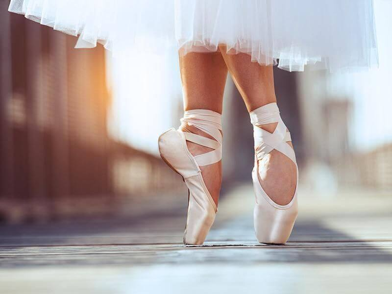

Hello world!
My hobby is dancing. I love dancing.
I like ballet. I have seen a lot of
ballets in my life. But I liked Giselle
the most. Ballet Giselle is about yang
girl. She lived in a small village.
I will not tell you everything. Watch
by your self. It is very beautiful
story. I liked it very much.

Ballet
Ballet is a musical and theatrical genre in which several types of music, dance, painting, drama and fine arts are closely intertwined, uniting them into a well-coordinated performance that unfolds before the audience on the theater stage.
Ballet considered be many to be a very beautiful because it combines grace, elegance, refinement and aesthetic perfection of movement.In dance, you can tell an entire story through every movement of the body.Even many artists, inspired by them, beautifully painted scenes of dance lessons and performances. For example, Edgar Degas. Look how beautifully he paints with his pastel on the canvas. His paintings are awesome
Anna Pavlova
Anna Pavlova is one of the best ballerinas in the history of Russia.
She managed to dance lot of ballets in her life, for example: "Dying swan", "Giselle",
"Sleeping Beauty"...
She danced in many cities and countries around the world (London, New York, Paris...)
When Anna came back from a tour, she always brought back various birds from there.
In addition to small birds, she also had peacocks, swans and flamingos.
Point shoes
Point shoes were invented in 1830 by Maria Camargo. In the beginning there were
no ballet shoes. There were only shoes or people were dancig bootlessly.
